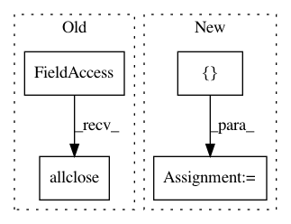

c5c417c92ff87484ad4c1f6e41207c0b778a4bed,theano/tensor/nnet/tests/test_neighbours.py,T_Images2Neibs,test_neibs_full_step_by_valid,#T_Images2Neibs#,265
Before Change
padded_x = T.set_subtensor(padded_x[:, :, extra[0]:-extra[0], extra[1]:-extra[1]], x)
x_using_valid = images2neibs(padded_x, neib_shape, neib_step, mode="valid")
x_using_full = images2neibs(x, neib_shape, neib_step, mode="full")
close = T.allclose(x_using_valid, x_using_full)
f = theano.function([], close, mode=self.mode)
assert f()
def test_neibs_bad_shape_wrap_centered(self):
After Change
x_using_valid = images2neibs(padded_x, neib_shape, neib_step, mode="valid")
x_using_full = images2neibs(x, neib_shape, neib_step, mode="full")
f_valid = theano.function([], x_using_valid, mode="FAST_RUN")
f_full = theano.function([], x_using_full, mode=self.mode)
unittest_tools.assert_allclose(f_valid(), f_full())
def test_neibs_bad_shape_wrap_centered(self):
shape = (2, 3, 10, 10)
In pattern: SUPERPATTERN
Frequency: 3
Non-data size: 4
Instances
Project Name: Theano/Theano
Commit Name: c5c417c92ff87484ad4c1f6e41207c0b778a4bed
Time: 2017-06-20
Author: lamblinp@iro.umontreal.ca
File Name: theano/tensor/nnet/tests/test_neighbours.py
Class Name: T_Images2Neibs
Method Name: test_neibs_full_step_by_valid
Project Name: Theano/Theano
Commit Name: c5c417c92ff87484ad4c1f6e41207c0b778a4bed
Time: 2017-06-20
Author: lamblinp@iro.umontreal.ca
File Name: theano/tensor/nnet/tests/test_neighbours.py
Class Name: T_Images2Neibs
Method Name: test_neibs_half_step_by_valid
Project Name: geomstats/geomstats
Commit Name: aba65f959fb114e67103a061e92ab5596c557d3d
Time: 2018-12-27
Author: ninamio78@gmail.com
File Name: geomstats/lie_group.py
Class Name: LieGroup
Method Name: group_exp